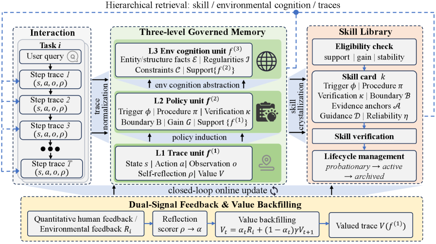

MSCE: Converting Agent Memory into Executable Skills
TL;DR
- "From Memory to Skills: Evidence-Grounded Co-Evolution Governance for Long-Horizon LLM Agents" (arXiv 2607.16621, July 2026; Bo Tang, Yang Zhang, et al.; submitted to EMNLP 2026) argues most agent memory systems stop at retrieving past traces as passive context; MSCE is a training-free framework that converts experience into callable skills.
- Experience is organized in layers — grounded step traces, reusable procedural policies, declarative environmental cognition — and evidence-backed policies with positive estimated gain are crystallized into skills that carry their own metadata: evidence links, applicability boundaries, decision guidance, verification rules, and reliability estimates. A skill knows when it applies and how to check itself.
- Reflection-weighted value backfilling propagates sparse terminal feedback through dense local self-reflections into evidence-calibrated per-trace values, which govern what memory survives and which policies get promoted. On EvoAgentBench and LoCoMo, MSCE is reported to significantly outperform skill-augmented and memory-driven baselines, with cross-domain transfer (no numbers in fetched sources).
Why this matters
There is growing evidence that agent memory, as currently built, doesn't work. The CL-Bench entry in this reading list found that naive in-context learning beats purpose-built memory systems across six expert-validated domains — retrieval-as-context architectures add overhead, not learning. The diagnosis MSCE offers: retrieved traces are passive. The agent must re-interpret raw past experience at inference time, every time, and nothing guarantees the lesson gets extracted, applied in the right situations, or dropped when it stops working. Memory-as-context leaves the conversion from experience to competence as an unstructured burden on the frozen model.
The alternative pole is memory-as-capability: distill experience into executable procedures — the Voyager lineage, and in this reading list OpenSpace's shared self-evolving skills and the tweet's framing that "the gap between memory-as-context and memory-as-capability seems to be where long-horizon agents actually compound." But naive skill accumulation has its own pathology: libraries fill with unvalidated, over-general, or stale procedures, and a wrong skill is worse than no skill because it executes confidently. What has been missing is governance — a principled account of which experiences deserve crystallization, what a skill must carry to be safely reusable, and how skills and memory get valued, maintained, and retired as evidence accumulates. That governance layer is MSCE's actual subject, and because it is training-free, it applies on top of frozen frontier models — squarely in the scaffold-improvement branch (166 of 239 papers) of the self-improvement survey's taxonomy.
The core idea
Two coupled insights:
-
Crystallization must be evidence-gated and self-describing. A procedural policy becomes a callable skill only when backed by evidence with positive estimated gain — an explicit counterfactual test (does acting on this policy beat not having it?) rather than "it appeared in a successful trajectory." And the skill ships with its own operating envelope: links to supporting evidence, applicability boundaries (when it holds), decision guidance (how to use it), verification rules (how to check it worked), and a reliability estimate (how much to trust it). Skills are less like cached functions and more like validated claims with confidence intervals and test procedures attached — which is what lets a library be governed rather than merely grown.
-
Credit assignment for experience needs densification. Long-horizon episodes yield sparse terminal feedback; a scalar outcome over a hundred steps says almost nothing about which steps mattered. MSCE's reflection-weighted value backfilling propagates terminal feedback backward through the trajectory, weighted by dense local self-reflections — the agent's step-level assessments of what helped or hurt. The result is evidence-calibrated per-trace values: an LLM-native analogue of return backpropagation, with self-reflection standing in for a learned critic. These values are the currency of governance — they decide which traces persist, which policies cross the crystallization threshold, and which skills survive.
How it works

Figure from the paper: Overview of MSCE with governed memory, skill crystallization, and dual-signal value backfilling.
Experience hierarchy (training-free, built from the agent's own rollouts):
- Grounded step traces — raw but structured records of what was done and observed, retaining the evidential ground truth everything above must link back to.
- Reusable procedural policies (the abstract's "L2 policies") — generalizations induced across traces: "in situation X, doing Y tends to work." Candidates, not yet trusted.
- Declarative environmental cognition — factual knowledge about the environment (how tools behave, what constraints hold), separate from procedures.
Crystallization. L2 policies whose linked evidence yields positive estimated gain are promoted into callable skills carrying the five-part metadata above. The applicability boundary curbs over-generalization (the classic failure of experience-induced rules); the verification rule makes each invocation self-checking, so outcomes feed back into the reliability estimate.
Value backfilling. After each episode, terminal feedback is backfilled through the trajectory, weighted by local self-reflections, producing calibrated values over traces. In the paper's notation, the per-step trace value is
where \(f_{i,t}^{(1)}\) is the L1 trace at step \(t\) of episode \(i\), \(\alpha_{i,t}\) the reflection weight (how confidently the local self-reflection attributes credit to this step), \(R_i\) the terminal episode reward, and \(\gamma\) a discount — a TD-style backup with self-reflection replacing a learned critic. The terminal reward itself is an LLM-evaluator mix
combining goal achievement \(g_i\), process quality \(p_i\), and user satisfaction \(u_i\), each in \([-1,1]\). The crystallization gate is the counterfactual policy gain
the (softmax-weighted) mean value of traces linked to policy \(f^{(2)}\) minus a prior-shrunk mean over unlinked traces \(S_{\mathrm{without}}\) (shrunk toward baseline \(b\) with pseudo-count \(N_0\) so small comparison pools cannot inflate gain); only policies with positive gain crystallize. Each deployed skill carries a Laplace-smoothed reliability
updated from verified invocations \(n_{\mathrm{pass}}/n_{\mathrm{trial}}\), which drives promotion, demotion, and retirement.
# MSCE online update operator U (per the paper's Algorithm 2)
on episode end:
extract L1 step traces; extract local self-reflections
score reflection weights alpha via LLM prompt; embed and persist traces
on feedback arrival:
R <- clip(0.45 g + 0.30 p + 0.25 u, -1, 1) # LLM evaluator
backfill V(f_t) = alpha_t R + (1 - alpha_t) gamma V(f_{t+1})
on value update:
associate traces to L2 policies (or pool candidates)
if quorum met: induce new L2 policy
recompute gain G = V_with - V_blend(S_without); update policy status
on L2 change:
abstract L3 environmental cognition over policy clusters
if G > 0 and evidence checks pass:
crystallize policy -> skill (evidence links, boundaries,
guidance, verification rules, reliability eta)
verify, then deploy; failures demote or retire the skill
Co-evolution governance. Memory and skills evolve as a coupled system under those values: low-value traces are pruned, policies gaining evidential support get promoted, skills whose verification failures accumulate are demoted or retired. New rollouts — including ones that used skills — generate new traces, closing the loop. The "governance" framing is apt: the machinery is less about storage and more about promotion criteria, audit trails (evidence links), and revocation.
At inference, the agent invokes skills as executable capabilities gated by their applicability boundaries and checked by their verification rules, rather than re-deriving behavior from retrieved raw context. (The exact retrieval/invocation interface is inferred from the thread — verify in the paper.)
Results
No numbers appear in the abstract, tweet, or fetched sources; the claimed findings:
- On EvoAgentBench and LoCoMo, MSCE "significantly outperforms state-of-the-art skill-augmented and memory-driven agent baselines" — beating both poles it synthesizes, suggesting the governance layer, not skill-use per se, drives the gain.
- Strong cross-domain transferability — notable because transfer is exactly where evidence-gated crystallization should pay off: policies promoted on real counterfactual gain, with explicit applicability boundaries, should travel better than memorized domain traces.
- Lifelong-evolution capability — sustained improvement as experience accumulates, the compounding behavior that passive-memory systems fail to show. Effect sizes, ablations (governance on/off, backfilling vs. uniform credit), and baseline identities: verify in the paper.
How it connects
- Within this reading list. CL-Bench provides the negative result MSCE answers, and its gain metric (learning vs. prior capability) is the right instrument to audit MSCE's claims with. OpenSpace shares the skills-from-experience thesis but focuses on cross-agent sharing and token economics with lighter per-skill validation; MSCE is the single-agent governance-heavy counterpart. CORE also compresses failures/successes into reusable guidance, but stops at natural-language insights — MSCE pushes one level further, from insight to executable, self-verifying capability. UNC's AutoResearchClaw result (an agent autonomously building a memory system that jumped LoCoMo F1 from 0.117 to 0.598) shows the same benchmark headroom from the architecture side. The Always-On Agents survey's axes for durable state (authority, provenance, mutability, recoverability...) read as the general theory of exactly the governance problem MSCE instantiates. And Qwen's Skill Self-Play uses the same skill abstraction for the opposite end: training-time reward generation with weight updates, versus MSCE's training-free inference-time capability.
- Prior work. Voyager (Wang et al., 2023) is the canonical executable-skill library, but curated by task success in a verifiable game world with little governance metadata. Agent Workflow Memory (Wang et al., 2024) induces reusable workflows from web-agent trajectories — the nearest ancestor to L2 policies. ExpeL (Zhao et al., 2024) extracts cross-task insights but keeps them as passive context; Reflexion (Shinn et al., 2023) introduced the self-reflection signal MSCE repurposes for value weighting. The backfilling scheme is conceptually a TD-style return propagation with self-reflection as the eligibility weighting — an old RL idea rebuilt without gradients.
Critical take
- The governance stack is many LLM judgments deep. Gain estimation, reflection quality, boundary induction, reliability calibration — each is itself an unverified model output. The literature on self-critique (e.g., CRITIC's finding that intrinsic self-correction without external grounding is unreliable) cuts directly against reflection-weighted credit: biased reflections yield miscalibrated values, which then govern what survives. The system's epistemics bottom out in self-assessment, dressed in governance vocabulary.
- "Positive estimated gain" is only as good as its counterfactual. Without controlled A/B evidence (did the paper run policy-on vs. policy-off comparisons, or estimate gain observationally from confounded traces?), crystallization may promote correlates of success rather than causes.
- Benchmark fit is questionable in one of two cases. EvoAgentBench appears purpose-built for evolving agents (and is not otherwise established); LoCoMo is long-horizon conversational memory, where "executable skills" is an awkward fit — strong LoCoMo numbers would suggest the memory layers, not skill crystallization, carry that result. The ablations matter more than the headline.
- Training-free means paying in tokens. Reflections per step, backfilling per episode, and governance bookkeeping are all inference-time costs; whether MSCE beats naive ICL at matched token budgets is exactly the CL-Bench-style question the paper needs to answer.
- Open question: skills carry reliability estimates and verification rules, but can governance handle environment drift — retiring a skill whose world changed under it — or only skills that were never good?
If you remember three things
- The gap that matters: memory-as-context vs. memory-as-capability — retrieval hands the model raw past to reinterpret; MSCE crystallizes experience into callable skills, and long-horizon compounding lives on the capability side.
- A reusable skill should be self-describing: evidence links, applicability boundaries, decision guidance, verification rules, reliability estimate — promotion gated on positive estimated gain, not mere co-occurrence with success.
- Reflection-weighted value backfilling is the credit-assignment trick: propagate sparse terminal feedback through dense local self-reflections to get per-trace values that govern what memory and which skills survive — training-free, but resting entirely on self-reflection quality (arXiv 2607.16621).